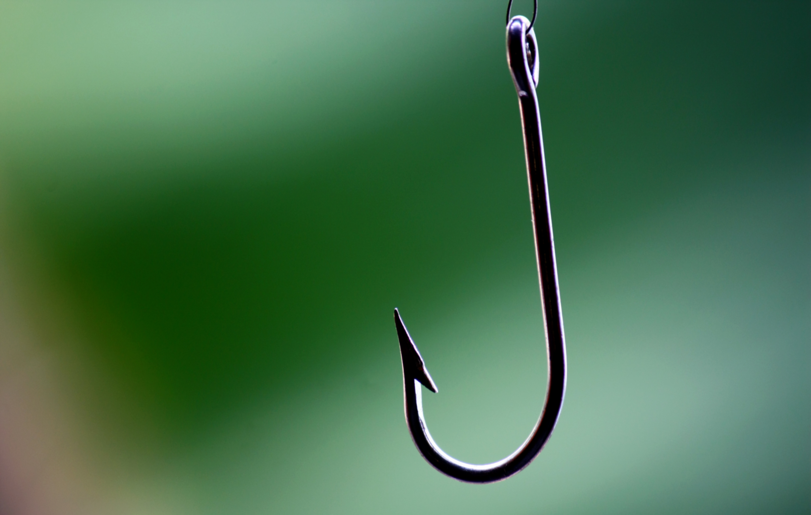

Well that is a great question as it depends on how you fish,If you cast out into the water and sit down and wait you should use a circle hook and it sets it self but you should still hook set to make sure that the hook is in its in it mouth.If you are a guy that casts out and reels it in like bass fishing you sould just not use a circle hook but any other.Another good thing about a circle hook is the it ensure a secure lip hook for a easier time

